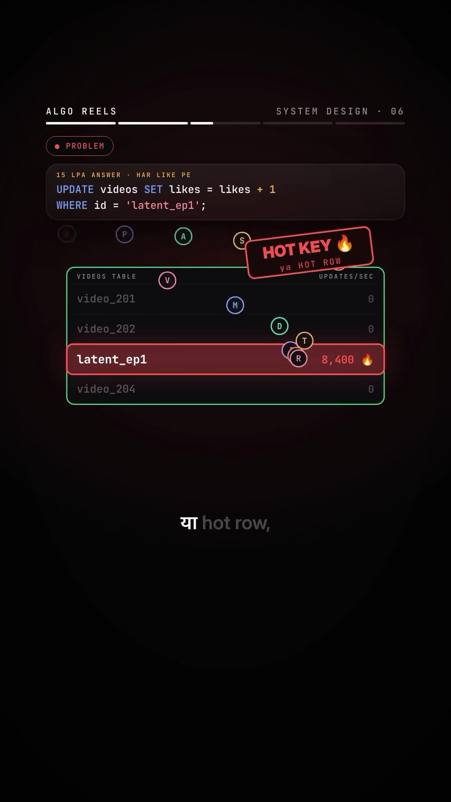
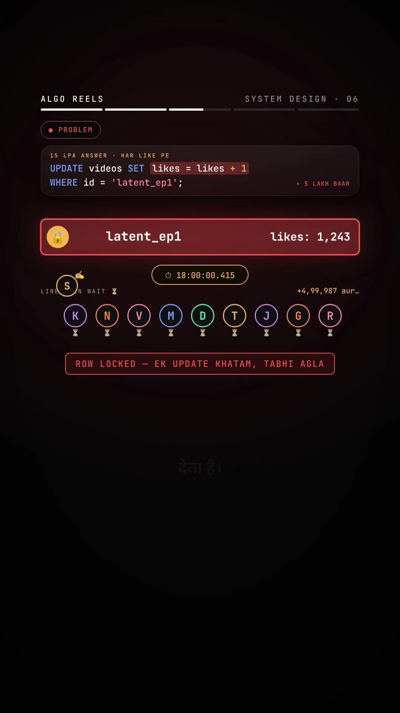
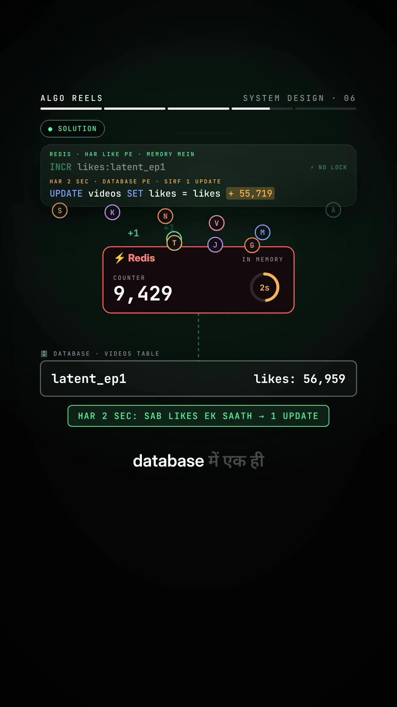

Engineering · System-Design
Hot Key / Hot Row Problem & Write-Behind Caching with Redis for High-Throughput Writes
Executive Summary
When high-concurrency viral events occur—such as an episode premiere receiving 500,000 likes within 60 seconds (~8,400 updates/sec)—direct database writes (e.g. UPDATE videos SET likes = likes + 1 WHERE id = 'latent_ep1';) trigger the notorious Hot Key / Hot Row problem. Because relational databases enforce row-level locking to maintain transactional consistency (ACID), concurrent transactions must queue sequentially behind a single lock. This causes cascading request timeouts and database connection pool starvation.
The standard distributed systems remedy is Write-Behind (Write-Back) Caching: incoming write events increment an in-memory counter in Redis via atomic operations (INCR) without locking, while an asynchronous batch worker periodically aggregates accumulated likes and flushes them to the relational database in a single batched update query every few seconds.
System Architecture & The Hot Row Problem
1. The Naive Approach ("15 LPA Candidate Answer")
-- Naive individual update executed 500,000 times concurrently
UPDATE videos
SET likes = likes + 1
WHERE id = 'latent_ep1';While syntactically correct, executing this query 8,400+ times per second against a single row creates severe failure modes:
- Exclusive Row Locks (Pessimistic Locking): Relational databases (PostgreSQL, MySQL/InnoDB) acquire exclusive row locks during write operations. Only one connection can modify
latent_ep1at any instant. - Lock Queue Saturation: Every subsequent like request is placed into an OS thread/process wait queue. Thousands of concurrent requests stall waiting for lock acquisition.
- Connection Pool Exhaustion: Web application workers hold open database connections while waiting in the lock queue, exhausting max connection limits (e.g.,
max_connections = 100orpool_size = 200) and bringing down unaffected queries across the entire platform. - Cascading Timeouts: HTTP client requests hit upstream API gateway timeouts (504 Gateway Timeout), dropping user engagement.


Solution: Write-Behind (Write-Back) Caching
The scalable pattern decouples user-facing write ingestion from durable database persistence.

Architecture Workflow
- Ingestion Tier: When a user hits the Like button, the API server executes an atomic in-memory increment against Redis:
Because Redis operates in-memory with single-threaded event-loop atomicity,INCR likes:latent_ep1INCRexecutes sub-millisecond without row locks or contention. - Immediate Acknowledgement: The client receives an instantaneous HTTP 200 response with zero database latency.
- Periodic Flush Worker: Every
Nseconds (e.g. 2 seconds), a background job or cron worker extracts accumulated counts:-- Flush delta to relational database in 1 single transaction UPDATE videos SET likes = likes + 55719 WHERE id = 'latent_ep1'; - Throughput Reduction: Instead of executing 500,000 queries per minute, the database receives only 30 batch updates (one every 2 seconds)—a 99.994% reduction in write query load.
Engineering Tradeoffs & Edge Cases
The Durability Conundrum: "What if Redis Crashes?"
At 0:49, the creator highlights the fundamental distributed systems question: "Agar database mein likhne se pehle Redis hi crash ho gaya... toh jama saare likes kahan gaye?"
| Strategy | Mechanism | Pros | Cons |
|---|---|---|---|
| Redis AOF (Append-Only File) | Append every INCR command to disk (e.g., appendfsync everysec) |
Near-zero loss on restart (at most 1 sec of data lost); minimal disk overhead | Slight I/O latency penalty compared to pure in-memory operation |
| Message Queue (Kafka / RabbitMQ) | Publish like events to a partitioned Kafka topic; batch consumer commits offsets after DB write | Guaranteed durability, exact-once or at-least-once processing, replayability | Higher operational complexity and infrastructure overhead |
| Acceptable Approximate Metrics | For vanity metrics (social likes/views), losing <1% during an unplanned failover is acceptable | Maximum throughput, lowest latency, simplest implementation | Minor counter discrepancy if unexpected hard crash occurs before flush |
Verbatim Audio Transcript & Dialogue
[00:00 - 00:08] Interviewer ne poocha: Latent ka naya episode — 1 minute mein 5 lakh likes. Database kaise update karoge?
[00:08 - 00:15] 15 LPA wala: Har like pe database mein
likes + 1. Query toh correct hai, par humein college project nahi, scalable system banana hai.[00:15 - 00:23] Yahin aata hai Hot Key problem. Aur iska fix? Write-Behind Caching. Yeh video save kar lo, interview mein kaam aayega.
[00:23 - 00:34] Problem samjho: Lakhon likes, sab ek hi row pe — us episode wali row. Isi ko Hot Key ya Hot Row kehte hain.
[00:34 - 00:41] Par database us row ko ek baar mein ek hi update karne deta hai. Toh line har second badhti jaati hai. Likes timeout hote hain, aur database ki saari connections isi line mein phas jaati hain.
[00:41 - 00:49] Solution: Likes pehle Redis mein gino. Redis memory mein counter rakhta hai. Har like pe bas
+1. Phir har kuch second mein, jama huye saare likes database mein ek hi update mein. 5 lakh updates ki jagah, bas gine-chune. Line khatam.[00:49 - 00:58] Ab 15 LPA wala bola: Agar database mein likhne se pehle Redis hi crash ho gaya, toh Redis mein jama saare likes kahan gaye? Tum batao, comment mein.